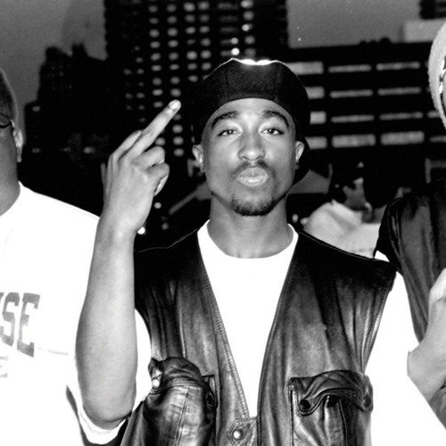
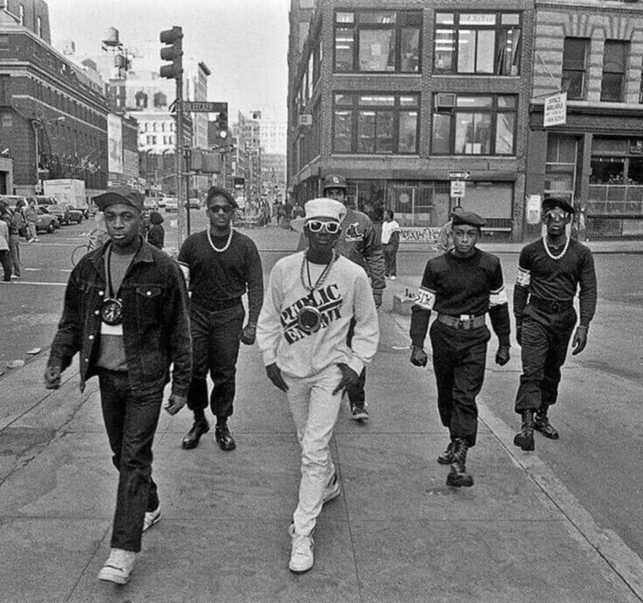

ATLAS MUSIC
Hip Hop
El Hip Hop nace en la década de los 70 en el sur del Bronx y Harlem, en Nueva York. Su origen proviene de una subcultura marginal de la que se desprenden diferentes formas artísticas entre un grupo de jóvenes afroamericanos e hispanos. Para ellos este nuevo género fue una herramienta que les permitió rebelarse en contra de las desigualdades que sufrían en las áreas urbanas de bajos recursos de la ciudad neoyorquina. Surge así una nueva forma de expresión musical que plantea reflexionar sobre la cruda realidad, siempre desafiando y reclamando a “los de arriba” otras alternativas.
En las fiestas callejeras que se armaban en esa época (block parties), conectaban los amplificadores en las luces de la calle para alimentar los instrumentos y los altavoces. La misma idea la tomó Dj Kool Herc (reconocido como el padre del Hip Hop) para sus fiestas en la sala de recreo en el 1520 de Sedgwick Avenue. Los Djs pinchaban géneros de músicas populares; como la gente se copaba, empezaron a separar los breaks (segmento musical corto que puede ser repetido y formar la estructura rítmica de una canción) de éstos temas, una técnica similar a la de los sound system jamaicanos. El pionero en el uso de esta forma de mezclar fue Herc (Clive Campbell, nacido en Jamaica pero radicado en E.E.U.U. en 1967) él extendía los breaks que eran muy cortos utilizando una mesa de mezclas y dos discos iguales que iba rebobinando y turnando entre sí. Algunos bailarines esperaban esos breaks para mostrar sus habilidades gimnastas (los b-boys), también había maestros de ceremonia (MC) que animaban las fiestas rimando y rapeando al ritmo de los distintos beats.
El Hip Hop tiene raíces de música afroamericana. Los Griots de África, eran viajeros que formaban parte de una tradición oral que proviene de cientos de años atrás. El estilo vocal era similar al de los raperos y se basaba en recitar sobre la música que hubiera de fondo. El jazz poetry, el talking blues, el góspel y el soul/funk son considerados proto-rap, rap antes de la exposición oficial en grabaciones del género dentro de la cultura hiphopera a partir de 1979. El primer disco fue “Rappers Delight” de The Sugarhill Gan; pero unas semanas antes se había publicado “King Tim III” de Personality Jack de la banda funk “The Fatback Band” calificado como disco rap por lo que hubo controversia y varios reclaman el título de ser los primeros en grabar Hip Hop en la historia.
Cuatro elementos que definen al género hiphopero
Los principales componentes y técnicas del Hip Hop ya estaban bien desarrollados en los primeros años de la década del 80: el rap (oral: recitar o cantar), turntablism o Djing (auditivo o musical, usar tocadiscos como instrumento musical), breaking (físico: baile) y graffiti (visual: pintura). Los cuatro elementos se han ido enriqueciendo con diversos estilos y se han adaptado al contexto social de cada época, pero sin perder la esencia contestataria de dicha cultura.
En 1980, el Hip Hop se diversificó como género desarrollando distintos estilos, cada vez más complejos. El tema “Planet Rock” de África Bambaataa (Dj estadounidense, fundador de Zulu Nation, una organización de jóvenes pacíficos que se expresan a través del baile, el rap, el graffiti y el Djing) fue una muestra de esto, la fusión de varios elementos con sonido electrónico, creó el primer subgénero musical electro.
Cantantes Populares
Tupac Shakur

The Notorious B.I.G.
A Tribe Called Quest
N.W.A
Public Enemy
